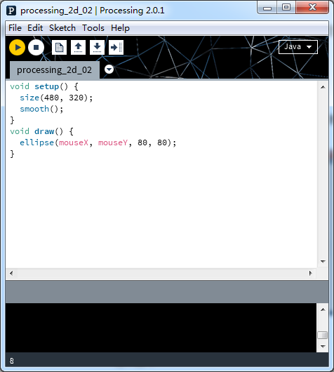
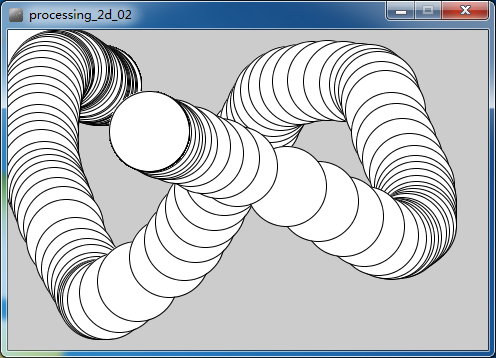
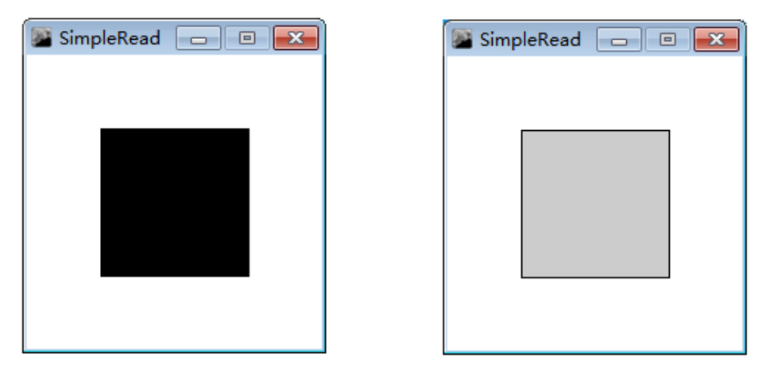
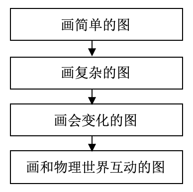

7. Processing¶
在很多人的眼里，编程是理工男的专利，是深不可测又枯燥无味的代码输入过程。但是，算法和程序设计技术的先驱——唐纳德·克努特（1974年度的图灵奖者）却不这么认为。他说，程序设计既是一门科学，也是一门艺术，二者可以彼此很好地互相补充。Processing就是一款专为设计师和艺术家使用的编程语言。
7.1. 什么是Processing¶
Processing由美国麻省理工学院媒体实验室美学与运算小组( Aesthetics Computation Group )的Casey Reas与Ben Fry创立。Processing的出现，被视为艺术设计创作的一场革命。利用Processing，艺术家可以将抽象的数据呈现为生动的视觉形象。它不仅可以生成唯美的图形，还能编写出功能强大的互动艺术作品。
Processing软件的官方网站：http://www.processing.org/

7.2. Processing的特色¶
1.用数字来设计
“用数字来设计”（Design By Numbers），是Processing独创的程序设计方法。它的思想是简单地写一行代码，就会在屏幕上生成一个图形，再增加一些代码，图形就能根据鼠标的动作发生变化。这些代码称之为草稿（Sketch）。Processing的设计者认为，草稿化（Sketching）是一种思维方式，有趣而便捷，可以让人在短时间内探索出很多想法。“草稿”一词的强调，让使用者体会在计算机屏幕上画图，就如同在图形纸上作画一样。
草稿
草稿对应的图画
利用Processing可以实现梦幻般的视觉展示效果。http://www.openprocessing.org/和http://wiki.processing.org/均是Processing的资源网站，提供了大量美轮美奂的画面。当然，这些画面都是用Processing画出来的。

2.代码简洁但功能强大
Processing是Java语言的延伸，支持许多现有的Java语言架构，不过在语法上简易了许多，并具有许多贴心及人性化的设计。通过Processing，无需太高深的编程技术，便可创作出漂亮的图形以及媒体交互作品。仅仅几行代码，就能制作出跟随鼠标画圆的互动作品来。
Processing支持3D图形，它有P3D和OpenGL两种渲染模式。Processing默认以2D模式运行，使用3D模式需要在size()函数中的第3个参数指定渲染模式，形如size(w, h, P3D)或size(w, h, OPENGL)。其中，P3D是Processing内置的，而OpenGL则以库的形式存在。
Processing采用“库”的形式，实现功能方面的拓展。除了Processing自己的核心库外，还有上百个非官方的库在Processing网站上。这些库拓展了Processing在音频、视频、网络和串口等方面的功能，甚至进入了计算机视觉处理、虚拟现实和电子装配（Fabrication）等领域。利用这些库，Processing能够任意读写很多种类的信息。
3.与物理世界的互动
Arduino是一个风靡世界的开源电子原型平台。它和Processing是姐妹项目，拥有共同的编程环境和类似的语法。Processing的范例中提供了一些和Arduino通讯的互动作品。Processing可以读取Arduino的传感器数据，然后把这些数据呈现在屏幕上。这种通信是相互的，也可以用Processing程序作为操作界面，控制电机、扬声器、灯光和相机等设备。当然，其他支持串行通讯的设备也都可以和Processing互动。
注：
虚谷号内置了Processing程序，同时又板载了Arduino UNO，用来绘制“与物理世界的互动”画特别方便。
Processing还有更多的优点。比如，其支持安卓系统，同样的代码可以输出不同格式的文件，在不同设备和环境中使用。因为开源而拥有大量资源，也是Processing最重要的优势之一。
7.3. Processing典型互动范例¶
既然是以交互为特色的编程语言，Processing的范例中提供了多个和硬件进行互动的作品，都是基于Arduino编写的。通过“File（文件）”-“Examples”打开，可以找到这些作品。
1.范例“SimpleRead”
SimpleRead是一个能够读取Arduino发送的信息，然后根据信息变换背景的小程序。范例中同时提供了Processing和Arduino的代码， Arduino代码在Processing程序的后面部分，一般会在注释中注明为“Arduino Code”。
Processing参考代码如下。:
import Processing.serial.*;
Serial myPort; // Create object from Serial class
int val; // Data received from the serial port
void setup()
{
size(200, 200);
String portName = Serial.list()[0];
myPort = new Serial(this, portName, 9600);
}
void draw()
{
if ( myPort.available() > 0) { // If data is available,
val = myPort.read(); // read it and store it in val
}
background(255); // Set background to white
if (val == 0) { // If the serial value is 0,
fill(0); // set fill to black
}
else { // If the serial value is not 0,
fill(204); // set fill to light gray
}
rect(50, 50, 100, 100);
}
Arduino参考代码如下。:
int switchPin = 4; // Switch connected to pin 4
void setup() {
pinMode(switchPin, INPUT); // Set pin 0 as an input
Serial.begin(9600); // Start serial communication at 9600 bps
}
void loop() {
if (digitalRead(switchPin) == HIGH) { // If switch is ON,
Serial.print(1, BYTE); // send 1 to Processing
} else { // If the switch is not ON,
Serial.print(0, BYTE); // send 0 to Processing
}
delay(100); // Wait 100 milliseconds
}
用Arduino IED将代码写入到板载的Arduino中，运行Processing可以看到效果。SimpleRead的功能是读取Arduino发送的数据，然后变换背景。从“int switchPin=4”语句可以得知，Arduino电路板的数字口4上，要接上一个数字传感器，如按钮、单向倾角和红外测障等传感器。当数字传感器的状态发生变化时，Processing的画面也会发生相应的变化。
2.范例“SimpleWrite”
通过“文件”→“范例程序”找到范例 SimpleWrite，这是一个能够向串口发送信息的小程序。如果鼠标指针移动到正方形上，那么背景变为灰色，并向串口发送“H”;否则背景为黑色，并向串口发送“L”。
Processing参考代码。:
import processing.serial.*;
Serial myPort; // Create object from Serial class
int val; // Data received from the serial port
void setup()
{
size(200, 200);
String portName = Serial.list()[0];
myPort = new Serial(this, portName, 9600);
}
void draw() {
background(255);
if (mouseOverRect() == true) { // If mouse is over square,
fill(204); // change color and
myPort.write('H'); // send an H to indicate mouse is over square
}
else { // If mouse is not over square,
fill(0); // change color and
myPort.write('L'); // send an L otherwise
}
rect(50, 50, 100, 100); // Draw a square
}
boolean mouseOverRect() { // Test if mouse is over square
return ((mouseX >= 50) && (mouseX <= 150) && (mouseY >= 50) && (mouseY <= 150));
}
Arduino参考代码。:
char val; // Data received from the serial port
int ledPin = 13; // Set the pin to digital I/O 4
void setup() {
pinMode(ledPin, OUTPUT); // Set pin as OUTPUT
Serial.begin(9600); // Start serial communication at 9600 bps
}
void loop() {
while (Serial.available()) { // If data is available to read,
val = Serial.read(); // read it and store it in val
}
if (val == 'H') { // If H was received
digitalWrite(ledPin, HIGH); // turn the LED on
} else {
digitalWrite(ledPin, LOW); // Otherwise turn it OFF
}
delay(100); // Wait 100 milliseconds for next reading
}
这个程序的运行效果是，如果鼠标指针移动到正方形上，那么背景变为灰色，虚谷号的13号口LED点亮;否则背景为黑色，13号口LED关闭。
7.4. Processing的适合对象¶
因为涉及代码编写，所以笔者不太建议在小学阶段开设Processing。其定位应该是中学以上的学生学习。但是可以利用腾讯扣叮系列的P5实验室，这是基于Processing的js版本做的图形化编程工具，和Processing基本兼容。少数已经具备Scratch程序基础的小学高年级学生，完全可以一试。因为，仅仅二维绘画方面，Processing比LOGO语言，不仅简单，而且更加形象、有趣。
在Processing的教学中，曾经发生过这样的趣事：一位艺术类院校教“互动编程”的教师，总是埋怨自己的学生编程能力差，写不出稍微复杂点的程序，而羡慕另一位在理工类院校教学的老师。但在理工类院校教学的教师也很苦恼，因为他的学生没有艺术想象力，程序展现出来的画面一点也没有艺术感觉。可见Processing就是一门融技术和艺术为一体的编程语言，尤其适合在艺术和技术两个领域都有浓厚兴趣的爱好者使用。
7.5. 如何开发Processing课程¶
相对于Scratch和VB来说，Processing没有图形化的编程界面和所见即所得的程序设计功能。与传统的程序设计教学不同，Processing的教学要从图形和交互开始，而不是从数据结构和文本控制台的输出开始。所以，传统的编程类课程设计思路对Processing来说，并不是很适合。
开发Processing要尤其注意以下三点：
切忌使用信息学奥赛方面的趣味试题作为课程的编程范例。因为Processing的设计理念是用代码画图，而不是解答数学题或者实现某些经典算法。
切忌使用语法教学形式，试图逐一介绍Processing的功能。学习Processing应该从交互图形设计出发，根据设计的需求，引入必要的功能。学习者没有必要把所有的函数、库的功能都研究一遍。
从模仿到创新是一条可行的学习技巧。模仿的对象除了一些经典范例外，还可以是现实中的图形，尝试用多种方式去实现，建立用代码画画的思想。
合理使用Processing自身提供的范例，开发Processing课程并不是很困难的一件事。Processing课程的设计思路可以参照这样的线索：
由于文化和语言的差异，国内研究Processing的人并不多。且不说在中小学，就是目前已经开设Processing课程的高校也寥寥无几。但是，在创意产业和互动媒体艺术迅速发展的中国，开展与Processing相关的课程，让对艺术感兴趣的文科生也能动手用代码描绘自己的创意，无疑是非常有意义的一件事。正如《爱上Processing》一书的翻译者陈思明所说：Processing是一把激发艺术灵感的钥匙，你可以轻易地在计算机屏幕中展现心中的艺术场景，感受更多灵感的涌现，在颜色与线条的海洋中漫步。